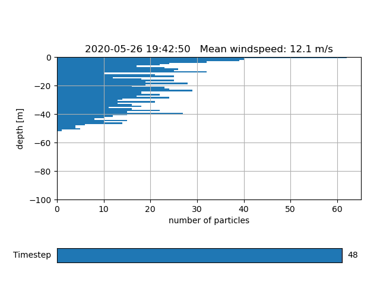
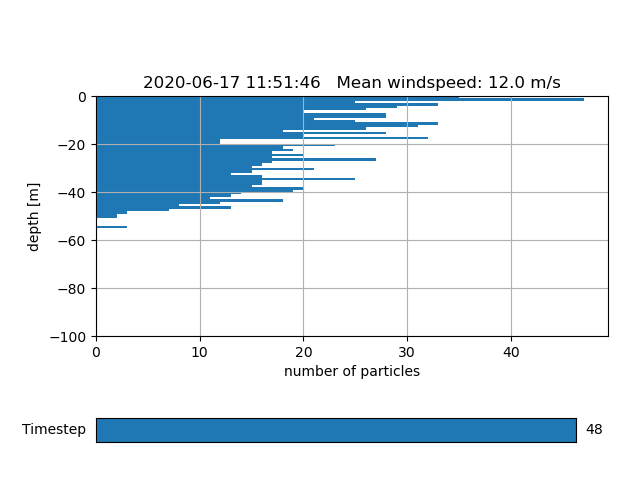
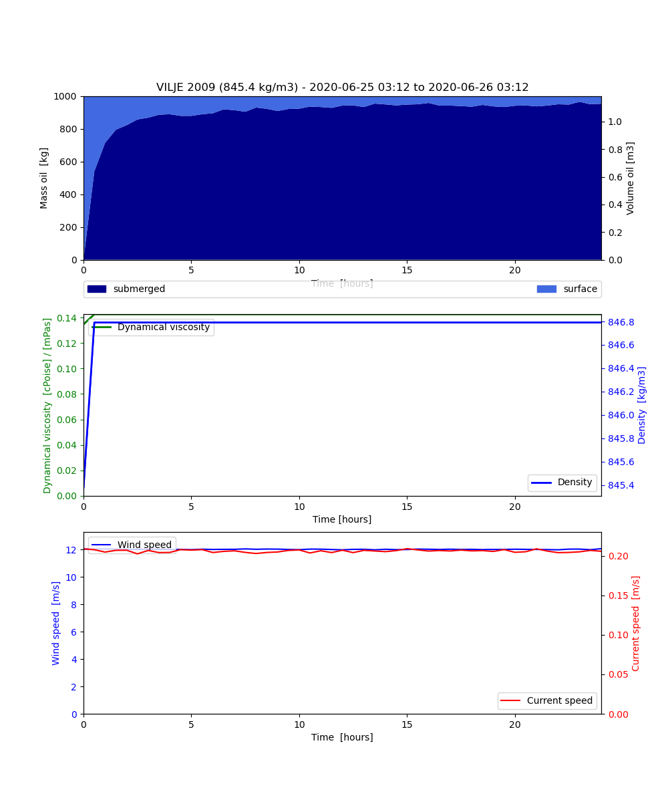
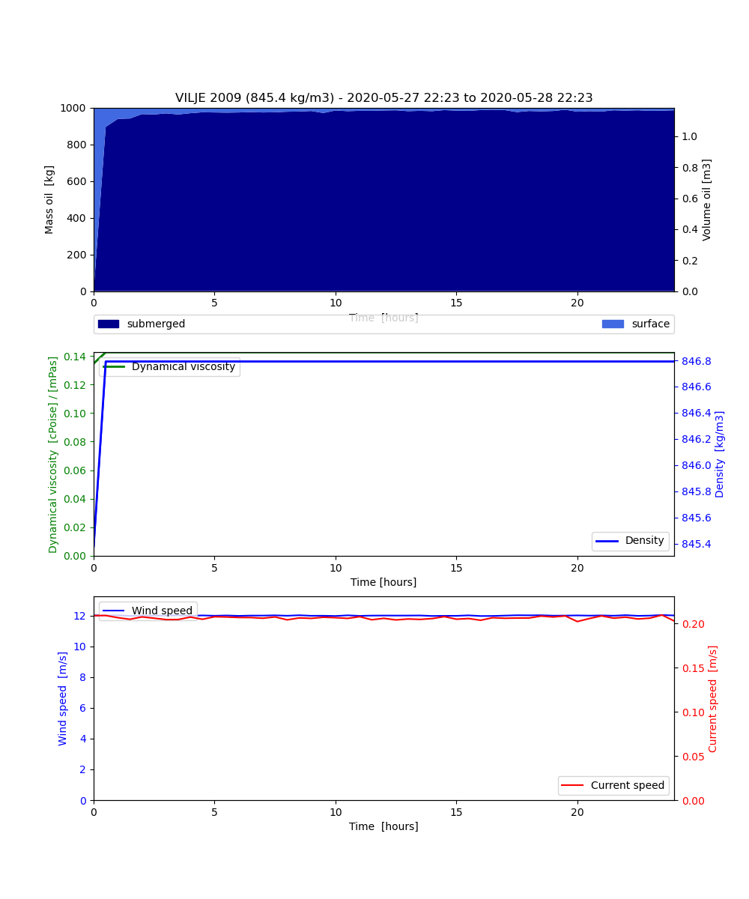

Note
Click here to download the full example code
Entrainment rate¶
from datetime import datetime, timedelta
from opendrift.models.openoil3D import OpenOil3D
import matplotlib.pyplot as plt
oiltype = 'VILJE 2009'
Tkcalich & Chan (2002) entrainment rate
o = OpenOil3D(loglevel=20, weathering_model='noaa')
o.fallback_values['land_binary_mask'] = 0
o.fallback_values['x_sea_water_velocity'] = -.2
o.fallback_values['y_sea_water_velocity'] = 0
o.fallback_values['x_wind'] = 12
o.fallback_values['y_wind'] = 0
o.fallback_values['sea_surface_wave_stokes_drift_x_velocity'] = .3
o.fallback_values['sea_surface_wave_stokes_drift_y_velocity'] = 0
o.set_config('wave_entrainment:entrainment_rate', 'Tkalich & Chan (2002)')
o.set_config('wave_entrainment:droplet_size_distribution', 'Johansen et al. (2015)')
o.set_config('processes:evaporation', False)
o.set_config('processes:dispersion', False)
o.set_config('turbulentmixing:droplet_diameter_min_wavebreaking', 1e-6)
o.set_config('turbulentmixing:droplet_diameter_max_wavebreaking', 1e-3)
o.seed_elements(lon=4, lat=60, time=datetime.now(), number=1000,
radius=100, z=0, oiltype=oiltype)
o.run(duration=timedelta(hours=24), time_step=900, time_step_output=1800)
Out:
19:42:50 INFO: OpenDriftSimulation initialised (version 1.2.1)
19:42:50 INFO: Using density 845.3770636541037 and viscosity 0.00015931193316731434 of oiltype VILJE 2009
19:42:50 INFO: Config validation OK
19:42:50 INFO: Setting SRS to latlong, since not defined before.
19:42:50 INFO: Fallback values will be used for the following variables which have no readers:
19:42:50 INFO: x_sea_water_velocity: -0.200000
19:42:50 INFO: y_sea_water_velocity: 0.000000
19:42:50 INFO: sea_surface_wave_significant_height: 0.000000
19:42:50 INFO: sea_surface_wave_stokes_drift_x_velocity: 0.300000
19:42:50 INFO: sea_surface_wave_stokes_drift_y_velocity: 0.000000
19:42:50 INFO: sea_surface_wave_period_at_variance_spectral_density_maximum: 0.000000
19:42:50 INFO: sea_surface_wave_mean_period_from_variance_spectral_density_second_frequency_moment: 0.000000
19:42:50 INFO: sea_ice_area_fraction: 0.000000
19:42:50 INFO: x_wind: 12.000000
19:42:50 INFO: y_wind: 0.000000
19:42:50 INFO: sea_floor_depth_below_sea_level: 10000.000000
19:42:50 INFO: ocean_vertical_diffusivity: 0.020000
19:42:50 INFO: sea_water_temperature: 10.000000
19:42:50 INFO: sea_water_salinity: 34.000000
19:42:50 INFO: upward_sea_water_velocity: 0.000000
19:42:50 INFO: Oil-water surface tension is 0.029650 Nm
19:42:50 INFO: 2020-05-25 19:42:50.192867 - step 1 of 96 - 1000 active elements (0 deactivated)
19:42:50 INFO: 2020-05-25 19:57:50.192867 - step 2 of 96 - 1000 active elements (0 deactivated)
19:42:50 INFO: 2020-05-25 20:12:50.192867 - step 3 of 96 - 1000 active elements (0 deactivated)
19:42:50 INFO: 2020-05-25 20:27:50.192867 - step 4 of 96 - 1000 active elements (0 deactivated)
19:42:50 INFO: 2020-05-25 20:42:50.192867 - step 5 of 96 - 1000 active elements (0 deactivated)
19:42:50 INFO: 2020-05-25 20:57:50.192867 - step 6 of 96 - 1000 active elements (0 deactivated)
19:42:51 INFO: 2020-05-25 21:12:50.192867 - step 7 of 96 - 1000 active elements (0 deactivated)
19:42:51 INFO: 2020-05-25 21:27:50.192867 - step 8 of 96 - 1000 active elements (0 deactivated)
19:42:51 INFO: 2020-05-25 21:42:50.192867 - step 9 of 96 - 1000 active elements (0 deactivated)
19:42:51 INFO: 2020-05-25 21:57:50.192867 - step 10 of 96 - 1000 active elements (0 deactivated)
19:42:51 INFO: 2020-05-25 22:12:50.192867 - step 11 of 96 - 1000 active elements (0 deactivated)
19:42:51 INFO: 2020-05-25 22:27:50.192867 - step 12 of 96 - 1000 active elements (0 deactivated)
19:42:51 INFO: 2020-05-25 22:42:50.192867 - step 13 of 96 - 1000 active elements (0 deactivated)
19:42:52 INFO: 2020-05-25 22:57:50.192867 - step 14 of 96 - 1000 active elements (0 deactivated)
19:42:52 INFO: 2020-05-25 23:12:50.192867 - step 15 of 96 - 1000 active elements (0 deactivated)
19:42:52 INFO: 2020-05-25 23:27:50.192867 - step 16 of 96 - 1000 active elements (0 deactivated)
19:42:52 INFO: 2020-05-25 23:42:50.192867 - step 17 of 96 - 1000 active elements (0 deactivated)
19:42:52 INFO: 2020-05-25 23:57:50.192867 - step 18 of 96 - 1000 active elements (0 deactivated)
19:42:52 INFO: 2020-05-26 00:12:50.192867 - step 19 of 96 - 1000 active elements (0 deactivated)
19:42:52 INFO: 2020-05-26 00:27:50.192867 - step 20 of 96 - 1000 active elements (0 deactivated)
19:42:52 INFO: 2020-05-26 00:42:50.192867 - step 21 of 96 - 1000 active elements (0 deactivated)
19:42:53 INFO: 2020-05-26 00:57:50.192867 - step 22 of 96 - 1000 active elements (0 deactivated)
19:42:53 INFO: 2020-05-26 01:12:50.192867 - step 23 of 96 - 1000 active elements (0 deactivated)
19:42:53 INFO: 2020-05-26 01:27:50.192867 - step 24 of 96 - 1000 active elements (0 deactivated)
19:42:53 INFO: 2020-05-26 01:42:50.192867 - step 25 of 96 - 1000 active elements (0 deactivated)
19:42:53 INFO: 2020-05-26 01:57:50.192867 - step 26 of 96 - 1000 active elements (0 deactivated)
19:42:53 INFO: 2020-05-26 02:12:50.192867 - step 27 of 96 - 1000 active elements (0 deactivated)
19:42:53 INFO: 2020-05-26 02:27:50.192867 - step 28 of 96 - 1000 active elements (0 deactivated)
19:42:54 INFO: 2020-05-26 02:42:50.192867 - step 29 of 96 - 1000 active elements (0 deactivated)
19:42:54 INFO: 2020-05-26 02:57:50.192867 - step 30 of 96 - 1000 active elements (0 deactivated)
19:42:54 INFO: 2020-05-26 03:12:50.192867 - step 31 of 96 - 1000 active elements (0 deactivated)
19:42:54 INFO: 2020-05-26 03:27:50.192867 - step 32 of 96 - 1000 active elements (0 deactivated)
19:42:54 INFO: 2020-05-26 03:42:50.192867 - step 33 of 96 - 1000 active elements (0 deactivated)
19:42:54 INFO: 2020-05-26 03:57:50.192867 - step 34 of 96 - 1000 active elements (0 deactivated)
19:42:54 INFO: 2020-05-26 04:12:50.192867 - step 35 of 96 - 1000 active elements (0 deactivated)
19:42:54 INFO: 2020-05-26 04:27:50.192867 - step 36 of 96 - 1000 active elements (0 deactivated)
19:42:55 INFO: 2020-05-26 04:42:50.192867 - step 37 of 96 - 1000 active elements (0 deactivated)
19:42:55 INFO: 2020-05-26 04:57:50.192867 - step 38 of 96 - 1000 active elements (0 deactivated)
19:42:55 INFO: 2020-05-26 05:12:50.192867 - step 39 of 96 - 1000 active elements (0 deactivated)
19:42:55 INFO: 2020-05-26 05:27:50.192867 - step 40 of 96 - 1000 active elements (0 deactivated)
19:42:55 INFO: 2020-05-26 05:42:50.192867 - step 41 of 96 - 1000 active elements (0 deactivated)
19:42:55 INFO: 2020-05-26 05:57:50.192867 - step 42 of 96 - 1000 active elements (0 deactivated)
19:42:55 INFO: 2020-05-26 06:12:50.192867 - step 43 of 96 - 1000 active elements (0 deactivated)
19:42:56 INFO: 2020-05-26 06:27:50.192867 - step 44 of 96 - 1000 active elements (0 deactivated)
19:42:56 INFO: 2020-05-26 06:42:50.192867 - step 45 of 96 - 1000 active elements (0 deactivated)
19:42:56 INFO: 2020-05-26 06:57:50.192867 - step 46 of 96 - 1000 active elements (0 deactivated)
19:42:56 INFO: 2020-05-26 07:12:50.192867 - step 47 of 96 - 1000 active elements (0 deactivated)
19:42:56 INFO: 2020-05-26 07:27:50.192867 - step 48 of 96 - 1000 active elements (0 deactivated)
19:42:56 INFO: 2020-05-26 07:42:50.192867 - step 49 of 96 - 1000 active elements (0 deactivated)
19:42:56 INFO: 2020-05-26 07:57:50.192867 - step 50 of 96 - 1000 active elements (0 deactivated)
19:42:56 INFO: 2020-05-26 08:12:50.192867 - step 51 of 96 - 1000 active elements (0 deactivated)
19:42:57 INFO: 2020-05-26 08:27:50.192867 - step 52 of 96 - 1000 active elements (0 deactivated)
19:42:57 INFO: 2020-05-26 08:42:50.192867 - step 53 of 96 - 1000 active elements (0 deactivated)
19:42:57 INFO: 2020-05-26 08:57:50.192867 - step 54 of 96 - 1000 active elements (0 deactivated)
19:42:57 INFO: 2020-05-26 09:12:50.192867 - step 55 of 96 - 1000 active elements (0 deactivated)
19:42:57 INFO: 2020-05-26 09:27:50.192867 - step 56 of 96 - 1000 active elements (0 deactivated)
19:42:57 INFO: 2020-05-26 09:42:50.192867 - step 57 of 96 - 1000 active elements (0 deactivated)
19:42:57 INFO: 2020-05-26 09:57:50.192867 - step 58 of 96 - 1000 active elements (0 deactivated)
19:42:58 INFO: 2020-05-26 10:12:50.192867 - step 59 of 96 - 1000 active elements (0 deactivated)
19:42:58 INFO: 2020-05-26 10:27:50.192867 - step 60 of 96 - 1000 active elements (0 deactivated)
19:42:58 INFO: 2020-05-26 10:42:50.192867 - step 61 of 96 - 1000 active elements (0 deactivated)
19:42:58 INFO: 2020-05-26 10:57:50.192867 - step 62 of 96 - 1000 active elements (0 deactivated)
19:42:58 INFO: 2020-05-26 11:12:50.192867 - step 63 of 96 - 1000 active elements (0 deactivated)
19:42:58 INFO: 2020-05-26 11:27:50.192867 - step 64 of 96 - 1000 active elements (0 deactivated)
19:42:58 INFO: 2020-05-26 11:42:50.192867 - step 65 of 96 - 1000 active elements (0 deactivated)
19:42:58 INFO: 2020-05-26 11:57:50.192867 - step 66 of 96 - 1000 active elements (0 deactivated)
19:42:59 INFO: 2020-05-26 12:12:50.192867 - step 67 of 96 - 1000 active elements (0 deactivated)
19:42:59 INFO: 2020-05-26 12:27:50.192867 - step 68 of 96 - 1000 active elements (0 deactivated)
19:42:59 INFO: 2020-05-26 12:42:50.192867 - step 69 of 96 - 1000 active elements (0 deactivated)
19:42:59 INFO: 2020-05-26 12:57:50.192867 - step 70 of 96 - 1000 active elements (0 deactivated)
19:42:59 INFO: 2020-05-26 13:12:50.192867 - step 71 of 96 - 1000 active elements (0 deactivated)
19:42:59 INFO: 2020-05-26 13:27:50.192867 - step 72 of 96 - 1000 active elements (0 deactivated)
19:42:59 INFO: 2020-05-26 13:42:50.192867 - step 73 of 96 - 1000 active elements (0 deactivated)
19:42:59 INFO: 2020-05-26 13:57:50.192867 - step 74 of 96 - 1000 active elements (0 deactivated)
19:43:00 INFO: 2020-05-26 14:12:50.192867 - step 75 of 96 - 1000 active elements (0 deactivated)
19:43:00 INFO: 2020-05-26 14:27:50.192867 - step 76 of 96 - 1000 active elements (0 deactivated)
19:43:00 INFO: 2020-05-26 14:42:50.192867 - step 77 of 96 - 1000 active elements (0 deactivated)
19:43:00 INFO: 2020-05-26 14:57:50.192867 - step 78 of 96 - 1000 active elements (0 deactivated)
19:43:00 INFO: 2020-05-26 15:12:50.192867 - step 79 of 96 - 1000 active elements (0 deactivated)
19:43:00 INFO: 2020-05-26 15:27:50.192867 - step 80 of 96 - 1000 active elements (0 deactivated)
19:43:00 INFO: 2020-05-26 15:42:50.192867 - step 81 of 96 - 1000 active elements (0 deactivated)
19:43:00 INFO: 2020-05-26 15:57:50.192867 - step 82 of 96 - 1000 active elements (0 deactivated)
19:43:01 INFO: 2020-05-26 16:12:50.192867 - step 83 of 96 - 1000 active elements (0 deactivated)
19:43:01 INFO: 2020-05-26 16:27:50.192867 - step 84 of 96 - 1000 active elements (0 deactivated)
19:43:01 INFO: 2020-05-26 16:42:50.192867 - step 85 of 96 - 1000 active elements (0 deactivated)
19:43:01 INFO: 2020-05-26 16:57:50.192867 - step 86 of 96 - 1000 active elements (0 deactivated)
19:43:01 INFO: 2020-05-26 17:12:50.192867 - step 87 of 96 - 1000 active elements (0 deactivated)
19:43:01 INFO: 2020-05-26 17:27:50.192867 - step 88 of 96 - 1000 active elements (0 deactivated)
19:43:01 INFO: 2020-05-26 17:42:50.192867 - step 89 of 96 - 1000 active elements (0 deactivated)
19:43:01 INFO: 2020-05-26 17:57:50.192867 - step 90 of 96 - 1000 active elements (0 deactivated)
19:43:02 INFO: 2020-05-26 18:12:50.192867 - step 91 of 96 - 1000 active elements (0 deactivated)
19:43:02 INFO: 2020-05-26 18:27:50.192867 - step 92 of 96 - 1000 active elements (0 deactivated)
19:43:02 INFO: 2020-05-26 18:42:50.192867 - step 93 of 96 - 1000 active elements (0 deactivated)
19:43:02 INFO: 2020-05-26 18:57:50.192867 - step 94 of 96 - 1000 active elements (0 deactivated)
19:43:02 INFO: 2020-05-26 19:12:50.192867 - step 95 of 96 - 1000 active elements (0 deactivated)
19:43:02 INFO: 2020-05-26 19:27:50.192867 - step 96 of 96 - 1000 active elements (0 deactivated)
Li et al. (2017) entrainment rate
o2 = OpenOil3D(loglevel=20, weathering_model='noaa')
o2.fallback_values['land_binary_mask'] = 0
o2.fallback_values['x_sea_water_velocity'] = -.2
o2.fallback_values['y_sea_water_velocity'] = 0
o2.fallback_values['x_wind'] = 12
o2.fallback_values['y_wind'] = 0
o2.fallback_values['sea_surface_wave_stokes_drift_x_velocity'] = .3
o2.fallback_values['sea_surface_wave_stokes_drift_y_velocity'] = 0
o2.set_config('wave_entrainment:entrainment_rate', 'Li et al. (2017)')
o2.set_config('wave_entrainment:droplet_size_distribution', 'Johansen et al. (2015)')
o2.set_config('processes:evaporation', False)
o2.set_config('processes:dispersion', False)
o2.set_config('turbulentmixing:droplet_diameter_min_wavebreaking', 1e-6)
o2.set_config('turbulentmixing:droplet_diameter_max_wavebreaking', 1e-3)
o2.seed_elements(lon=4, lat=60, time=datetime.now(), number=1000,
radius=100, z=0, oiltype=oiltype)
o2.run(duration=timedelta(hours=24), time_step=900, time_step_output=1800)
Out:
19:43:02 INFO: OpenDriftSimulation initialised (version 1.2.1)
19:43:02 INFO: Using density 845.3770636541037 and viscosity 0.00015931193316731434 of oiltype VILJE 2009
19:43:03 INFO: Config validation OK
19:43:03 INFO: Setting SRS to latlong, since not defined before.
19:43:03 INFO: Fallback values will be used for the following variables which have no readers:
19:43:03 INFO: x_sea_water_velocity: -0.200000
19:43:03 INFO: y_sea_water_velocity: 0.000000
19:43:03 INFO: sea_surface_wave_significant_height: 0.000000
19:43:03 INFO: sea_surface_wave_stokes_drift_x_velocity: 0.300000
19:43:03 INFO: sea_surface_wave_stokes_drift_y_velocity: 0.000000
19:43:03 INFO: sea_surface_wave_period_at_variance_spectral_density_maximum: 0.000000
19:43:03 INFO: sea_surface_wave_mean_period_from_variance_spectral_density_second_frequency_moment: 0.000000
19:43:03 INFO: sea_ice_area_fraction: 0.000000
19:43:03 INFO: x_wind: 12.000000
19:43:03 INFO: y_wind: 0.000000
19:43:03 INFO: sea_floor_depth_below_sea_level: 10000.000000
19:43:03 INFO: ocean_vertical_diffusivity: 0.020000
19:43:03 INFO: sea_water_temperature: 10.000000
19:43:03 INFO: sea_water_salinity: 34.000000
19:43:03 INFO: upward_sea_water_velocity: 0.000000
19:43:03 INFO: Oil-water surface tension is 0.029650 Nm
19:43:03 INFO: 2020-05-25 19:43:02.974662 - step 1 of 96 - 1000 active elements (0 deactivated)
19:43:03 INFO: 2020-05-25 19:58:02.974662 - step 2 of 96 - 1000 active elements (0 deactivated)
19:43:03 INFO: 2020-05-25 20:13:02.974662 - step 3 of 96 - 1000 active elements (0 deactivated)
19:43:03 INFO: 2020-05-25 20:28:02.974662 - step 4 of 96 - 1000 active elements (0 deactivated)
19:43:03 INFO: 2020-05-25 20:43:02.974662 - step 5 of 96 - 1000 active elements (0 deactivated)
19:43:03 INFO: 2020-05-25 20:58:02.974662 - step 6 of 96 - 1000 active elements (0 deactivated)
19:43:03 INFO: 2020-05-25 21:13:02.974662 - step 7 of 96 - 1000 active elements (0 deactivated)
19:43:03 INFO: 2020-05-25 21:28:02.974662 - step 8 of 96 - 1000 active elements (0 deactivated)
19:43:04 INFO: 2020-05-25 21:43:02.974662 - step 9 of 96 - 1000 active elements (0 deactivated)
19:43:04 INFO: 2020-05-25 21:58:02.974662 - step 10 of 96 - 1000 active elements (0 deactivated)
19:43:04 INFO: 2020-05-25 22:13:02.974662 - step 11 of 96 - 1000 active elements (0 deactivated)
19:43:04 INFO: 2020-05-25 22:28:02.974662 - step 12 of 96 - 1000 active elements (0 deactivated)
19:43:04 INFO: 2020-05-25 22:43:02.974662 - step 13 of 96 - 1000 active elements (0 deactivated)
19:43:04 INFO: 2020-05-25 22:58:02.974662 - step 14 of 96 - 1000 active elements (0 deactivated)
19:43:04 INFO: 2020-05-25 23:13:02.974662 - step 15 of 96 - 1000 active elements (0 deactivated)
19:43:04 INFO: 2020-05-25 23:28:02.974662 - step 16 of 96 - 1000 active elements (0 deactivated)
19:43:05 INFO: 2020-05-25 23:43:02.974662 - step 17 of 96 - 1000 active elements (0 deactivated)
19:43:05 INFO: 2020-05-25 23:58:02.974662 - step 18 of 96 - 1000 active elements (0 deactivated)
19:43:05 INFO: 2020-05-26 00:13:02.974662 - step 19 of 96 - 1000 active elements (0 deactivated)
19:43:05 INFO: 2020-05-26 00:28:02.974662 - step 20 of 96 - 1000 active elements (0 deactivated)
19:43:05 INFO: 2020-05-26 00:43:02.974662 - step 21 of 96 - 1000 active elements (0 deactivated)
19:43:05 INFO: 2020-05-26 00:58:02.974662 - step 22 of 96 - 1000 active elements (0 deactivated)
19:43:05 INFO: 2020-05-26 01:13:02.974662 - step 23 of 96 - 1000 active elements (0 deactivated)
19:43:05 INFO: 2020-05-26 01:28:02.974662 - step 24 of 96 - 1000 active elements (0 deactivated)
19:43:06 INFO: 2020-05-26 01:43:02.974662 - step 25 of 96 - 1000 active elements (0 deactivated)
19:43:06 INFO: 2020-05-26 01:58:02.974662 - step 26 of 96 - 1000 active elements (0 deactivated)
19:43:06 INFO: 2020-05-26 02:13:02.974662 - step 27 of 96 - 1000 active elements (0 deactivated)
19:43:06 INFO: 2020-05-26 02:28:02.974662 - step 28 of 96 - 1000 active elements (0 deactivated)
19:43:06 INFO: 2020-05-26 02:43:02.974662 - step 29 of 96 - 1000 active elements (0 deactivated)
19:43:06 INFO: 2020-05-26 02:58:02.974662 - step 30 of 96 - 1000 active elements (0 deactivated)
19:43:06 INFO: 2020-05-26 03:13:02.974662 - step 31 of 96 - 1000 active elements (0 deactivated)
19:43:07 INFO: 2020-05-26 03:28:02.974662 - step 32 of 96 - 1000 active elements (0 deactivated)
19:43:07 INFO: 2020-05-26 03:43:02.974662 - step 33 of 96 - 1000 active elements (0 deactivated)
19:43:07 INFO: 2020-05-26 03:58:02.974662 - step 34 of 96 - 1000 active elements (0 deactivated)
19:43:07 INFO: 2020-05-26 04:13:02.974662 - step 35 of 96 - 1000 active elements (0 deactivated)
19:43:07 INFO: 2020-05-26 04:28:02.974662 - step 36 of 96 - 1000 active elements (0 deactivated)
19:43:07 INFO: 2020-05-26 04:43:02.974662 - step 37 of 96 - 1000 active elements (0 deactivated)
19:43:07 INFO: 2020-05-26 04:58:02.974662 - step 38 of 96 - 1000 active elements (0 deactivated)
19:43:07 INFO: 2020-05-26 05:13:02.974662 - step 39 of 96 - 1000 active elements (0 deactivated)
19:43:08 INFO: 2020-05-26 05:28:02.974662 - step 40 of 96 - 1000 active elements (0 deactivated)
19:43:08 INFO: 2020-05-26 05:43:02.974662 - step 41 of 96 - 1000 active elements (0 deactivated)
19:43:08 INFO: 2020-05-26 05:58:02.974662 - step 42 of 96 - 1000 active elements (0 deactivated)
19:43:08 INFO: 2020-05-26 06:13:02.974662 - step 43 of 96 - 1000 active elements (0 deactivated)
19:43:08 INFO: 2020-05-26 06:28:02.974662 - step 44 of 96 - 1000 active elements (0 deactivated)
19:43:08 INFO: 2020-05-26 06:43:02.974662 - step 45 of 96 - 1000 active elements (0 deactivated)
19:43:08 INFO: 2020-05-26 06:58:02.974662 - step 46 of 96 - 1000 active elements (0 deactivated)
19:43:08 INFO: 2020-05-26 07:13:02.974662 - step 47 of 96 - 1000 active elements (0 deactivated)
19:43:09 INFO: 2020-05-26 07:28:02.974662 - step 48 of 96 - 1000 active elements (0 deactivated)
19:43:09 INFO: 2020-05-26 07:43:02.974662 - step 49 of 96 - 1000 active elements (0 deactivated)
19:43:09 INFO: 2020-05-26 07:58:02.974662 - step 50 of 96 - 1000 active elements (0 deactivated)
19:43:09 INFO: 2020-05-26 08:13:02.974662 - step 51 of 96 - 1000 active elements (0 deactivated)
19:43:09 INFO: 2020-05-26 08:28:02.974662 - step 52 of 96 - 1000 active elements (0 deactivated)
19:43:09 INFO: 2020-05-26 08:43:02.974662 - step 53 of 96 - 1000 active elements (0 deactivated)
19:43:09 INFO: 2020-05-26 08:58:02.974662 - step 54 of 96 - 1000 active elements (0 deactivated)
19:43:09 INFO: 2020-05-26 09:13:02.974662 - step 55 of 96 - 1000 active elements (0 deactivated)
19:43:10 INFO: 2020-05-26 09:28:02.974662 - step 56 of 96 - 1000 active elements (0 deactivated)
19:43:10 INFO: 2020-05-26 09:43:02.974662 - step 57 of 96 - 1000 active elements (0 deactivated)
19:43:10 INFO: 2020-05-26 09:58:02.974662 - step 58 of 96 - 1000 active elements (0 deactivated)
19:43:10 INFO: 2020-05-26 10:13:02.974662 - step 59 of 96 - 1000 active elements (0 deactivated)
19:43:10 INFO: 2020-05-26 10:28:02.974662 - step 60 of 96 - 1000 active elements (0 deactivated)
19:43:10 INFO: 2020-05-26 10:43:02.974662 - step 61 of 96 - 1000 active elements (0 deactivated)
19:43:10 INFO: 2020-05-26 10:58:02.974662 - step 62 of 96 - 1000 active elements (0 deactivated)
19:43:11 INFO: 2020-05-26 11:13:02.974662 - step 63 of 96 - 1000 active elements (0 deactivated)
19:43:11 INFO: 2020-05-26 11:28:02.974662 - step 64 of 96 - 1000 active elements (0 deactivated)
19:43:11 INFO: 2020-05-26 11:43:02.974662 - step 65 of 96 - 1000 active elements (0 deactivated)
19:43:11 INFO: 2020-05-26 11:58:02.974662 - step 66 of 96 - 1000 active elements (0 deactivated)
19:43:11 INFO: 2020-05-26 12:13:02.974662 - step 67 of 96 - 1000 active elements (0 deactivated)
19:43:11 INFO: 2020-05-26 12:28:02.974662 - step 68 of 96 - 1000 active elements (0 deactivated)
19:43:11 INFO: 2020-05-26 12:43:02.974662 - step 69 of 96 - 1000 active elements (0 deactivated)
19:43:12 INFO: 2020-05-26 12:58:02.974662 - step 70 of 96 - 1000 active elements (0 deactivated)
19:43:12 INFO: 2020-05-26 13:13:02.974662 - step 71 of 96 - 1000 active elements (0 deactivated)
19:43:12 INFO: 2020-05-26 13:28:02.974662 - step 72 of 96 - 1000 active elements (0 deactivated)
19:43:12 INFO: 2020-05-26 13:43:02.974662 - step 73 of 96 - 1000 active elements (0 deactivated)
19:43:12 INFO: 2020-05-26 13:58:02.974662 - step 74 of 96 - 1000 active elements (0 deactivated)
19:43:12 INFO: 2020-05-26 14:13:02.974662 - step 75 of 96 - 1000 active elements (0 deactivated)
19:43:12 INFO: 2020-05-26 14:28:02.974662 - step 76 of 96 - 1000 active elements (0 deactivated)
19:43:12 INFO: 2020-05-26 14:43:02.974662 - step 77 of 96 - 1000 active elements (0 deactivated)
19:43:13 INFO: 2020-05-26 14:58:02.974662 - step 78 of 96 - 1000 active elements (0 deactivated)
19:43:13 INFO: 2020-05-26 15:13:02.974662 - step 79 of 96 - 1000 active elements (0 deactivated)
19:43:13 INFO: 2020-05-26 15:28:02.974662 - step 80 of 96 - 1000 active elements (0 deactivated)
19:43:13 INFO: 2020-05-26 15:43:02.974662 - step 81 of 96 - 1000 active elements (0 deactivated)
19:43:13 INFO: 2020-05-26 15:58:02.974662 - step 82 of 96 - 1000 active elements (0 deactivated)
19:43:13 INFO: 2020-05-26 16:13:02.974662 - step 83 of 96 - 1000 active elements (0 deactivated)
19:43:13 INFO: 2020-05-26 16:28:02.974662 - step 84 of 96 - 1000 active elements (0 deactivated)
19:43:14 INFO: 2020-05-26 16:43:02.974662 - step 85 of 96 - 1000 active elements (0 deactivated)
19:43:14 INFO: 2020-05-26 16:58:02.974662 - step 86 of 96 - 1000 active elements (0 deactivated)
19:43:14 INFO: 2020-05-26 17:13:02.974662 - step 87 of 96 - 1000 active elements (0 deactivated)
19:43:14 INFO: 2020-05-26 17:28:02.974662 - step 88 of 96 - 1000 active elements (0 deactivated)
19:43:14 INFO: 2020-05-26 17:43:02.974662 - step 89 of 96 - 1000 active elements (0 deactivated)
19:43:14 INFO: 2020-05-26 17:58:02.974662 - step 90 of 96 - 1000 active elements (0 deactivated)
19:43:14 INFO: 2020-05-26 18:13:02.974662 - step 91 of 96 - 1000 active elements (0 deactivated)
19:43:14 INFO: 2020-05-26 18:28:02.974662 - step 92 of 96 - 1000 active elements (0 deactivated)
19:43:15 INFO: 2020-05-26 18:43:02.974662 - step 93 of 96 - 1000 active elements (0 deactivated)
19:43:15 INFO: 2020-05-26 18:58:02.974662 - step 94 of 96 - 1000 active elements (0 deactivated)
19:43:15 INFO: 2020-05-26 19:13:02.974662 - step 95 of 96 - 1000 active elements (0 deactivated)
19:43:15 INFO: 2020-05-26 19:28:02.974662 - step 96 of 96 - 1000 active elements (0 deactivated)
Plotting and comparing
o.plot_vertical_distribution()
o2.plot_vertical_distribution()
o.plot_oil_budget()
o2.plot_oil_budget()
legend = ['Tkalich & Chan (2002)', 'Li et al. (2017)']
o.animation_profile(compare=o2, legend=legend)
- 
- 
- 
- 
Out:
19:43:17 INFO: Saving animation to /root/project/docs/source/gallery/animations/example_entrainment_rate_0.gif...
19:43:17 INFO: Making animated gif...
o.animation(compare=o2, legend=legend,fast=True)
Out:
19:43:31 WARNING: plotting fast. this will make your plots less accurate.
/opt/conda/envs/opendrift/lib/python3.8/site-packages/cartopy/mpl/gridliner.py:307: UserWarning: The .xlabels_top attribute is deprecated. Please use .top_labels to toggle visibility instead.
warnings.warn('The .xlabels_top attribute is deprecated. Please '
/opt/conda/envs/opendrift/lib/python3.8/site-packages/cartopy/mpl/geoaxes.py:1546: MatplotlibDeprecationWarning: Using a string of single character colors as a color sequence is deprecated. Use an explicit list instead.
result = matplotlib.axes.Axes.scatter(self, *args, **kwargs)
19:43:33 INFO: Saving animation to /root/project/docs/source/gallery/animations/example_entrainment_rate_0.gif...
19:43:33 INFO: Making animated gif...

Total running time of the script: ( 1 minutes 51.920 seconds)